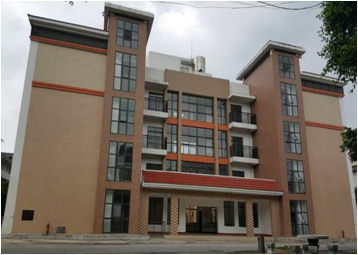
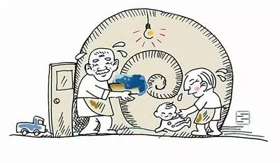

[养老护理] 红枫叶日间照料中心现已开始接受预约体验（每天限额50名）
-

一楼：老人日间托养服务。老人白天在日间照料中心活动，夜间回归家庭，与子女共享天伦之乐。二、三、四楼：老人临时托管照料服务。子女旅游、出差等外出期间，将老人托付日间照料中心24小时照料。每周二为中心开放日，欢迎老人、子女参观、体验...
admin 7 天前
[养老护理] “老漂族”：中国式家庭生命周期历程中的特殊群体
-

以同城漂或异地漂、阶段漂或长期漂、共同漂或单体漂等面貌出现的“老漂族”，是当今社会变迁背景下，中国式家庭生命周期历程中出现的一个新的特殊群体。这一群体属于家庭结构中的父代，年龄大多在50—70岁之间，...
zhouhaifa 2015-3-16
[养老护理] 老年护理应帮助老人恢复自理能力
-
今天下午我想和大家一起来思考和探讨的三个问题，第一我们到底在说的什么是护理？我们的社会在每个家庭要准备要小孩的时候，都会去学习、研究从怎么怀孕、育儿、教育，全家动员起来包括已经有经验的爷爷、奶奶、外公、外婆都会动员起来，但是很少有人说家里父母退休了，或者老人刚刚过了70、80大寿，...
libingccmb 2015-8-8
[养老护理] 2016年底北京所有街道都能居家养老
-
8月10日上午，北京市民政局局长李万钧做客北京城市广播《市民对话一把手》节目时表示，根据京津冀协调发展规划，北京市不再新建大型养老机构，而将支持在北京周边地区建设具备医院、护理院、养老院功能的“养老社区”。...
admin 2015-8-13